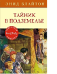

Тайник в подземелье

Сьюзи, как всегда, суёт нос в дела «Секретной семёрки», но, после того как их с Джеком дядя подарил им подзорную трубу, у неё появилось законное основание заходить в сарай, где проходят собрания команды Питера.

Сьюзи, как всегда, суёт нос в дела «Секретной семёрки», но, после того как их с Джеком дядя подарил им подзорную трубу, у неё появилось законное основание заходить в сарай, где проходят собрания команды Питера.